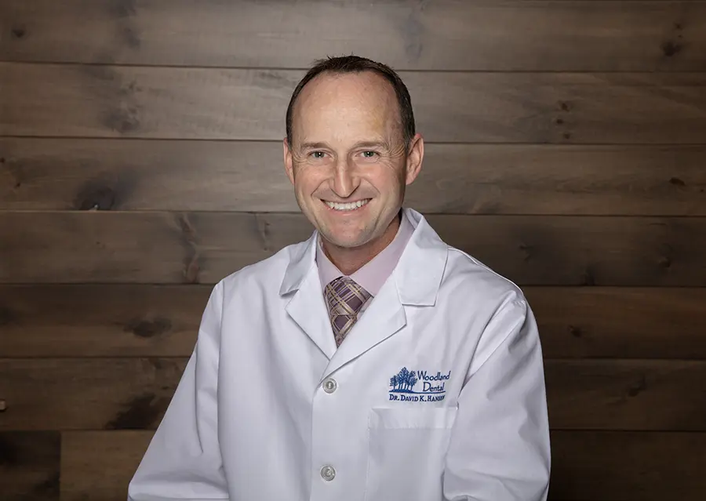
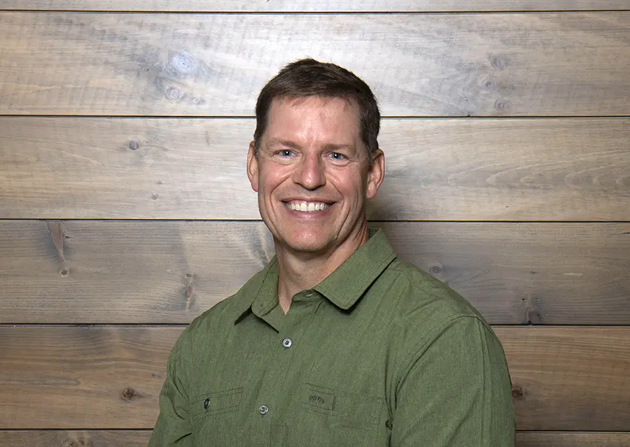

Page Title
Sub Heading
Donec Viverra Dolor Quis Habitant Nisl Ultricies Maximus Sapien Blandit Sollicitudin Maecenas Adipiscing Quam Purus Senectus Pretium Facilisis Habitasse.
Sub Heading
Sub Sub Heading
Donec Viverra Dolor Quis Habitant Nisl Ultricies Maximus Sapien Blandit Sollicitudin Maecenas Adipiscing Quam Purus Senectus Pretium Facilisis Habitasse.
Sub Sub Heading
Donec Viverra Dolor Quis Habitant Nisl Ultricies Maximus Sapien Blandit Sollicitudin Maecenas Adipiscing Quam Purus Senectus Pretium Facilisis Habitasse.
Sample of card1 used for testimonials
"The staff members of Woodland Dental are skilled and competent. They are also tuned into patient anxieties and good at easing concerns.
Dr. Hansen is friendly and clearly concerned about making quality dental work happen for his patients."
"The staff members of Woodland Dental are skilled and competent. They are also tuned into patient anxieties and good at easing concerns.
Dr. Hansen is friendly and clearly concerned about making quality dental work happen for his patients."
"The staff members of Woodland Dental are skilled and competent. They are also tuned into patient anxieties and good at easing concerns.
Dr. Hansen is friendly and clearly concerned about making quality dental work happen for his patients."
Sample of card2 used for employees
Robyn J.
Dental Hygienist
Since 1984
Robyn S.
Dental Assistant
Since 1999
Sample of card3 used for doctors

